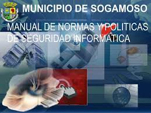

Elementos de un sistema de informacion computacional
Equipo computacional.
es un sistema informático de componentes electrónicos que en conjunto proporcionan datos de salida procesados mediante ecuaciones matemáticas. Los componentes son el hardware y se encargan de procesar todas las instrucciones del software.
RECURSO HUMANO: Es la persona que se encargan del manejo del hardware y manipulación del software, también conocido como el usuario. ... Es la parte principal de un computador y su objetivo es procesar y controlar todas las operaciones de un sistema informático.
Fuente :
El código fuente en la informática, está definido como el conjunto de línea de textos que representan los lineamientos que debe seguir la computadora para elaborar un programa, es decir que en este código se encuentra escrito el funcionamiento de la computadora. La fuente o también llamado tipo de letra, es un conjunto de caracteres alfanuméricos, que se distingue del resto por su diseño y peculiaridades. Según estas peculiaridades, puede incluir sólo letras, números o caracteres especiales. Seguro que si habeis escrito alguna cosa en un editor de texto os suenen los nombres Arial, New Roman... etc... cada uno de ellos es una fuente, con su set de caracteres y su estilo propio.

Progrmas:
Un programa informático o programa de computadora es una secuencia de instrucciones, escritas para realizar una tarea específica en un computador. ... Por otra parte, los programas de computadora se pueden ejecutar con la ayuda de un intérprete, o pueden ser empotrados directamente en hardware. Un programa informático o programa de computador es una pieza de software, es decir, una secuencia compleja de instrucciones y procesos orquestados para cumplir una tarea específica en un computador o sistema de computadores. Estos programas pueden ser programas preinstalados en el computador, como el Sistema Operativo que controla todo el funcionamiento del mismo, o pueden ser añadidos adicionalmente por el usuario - Fuente: https://concepto.de/programa-informatico/
Telecomunicaciones:
Las telecomunicaciones es la trasmisión a distancia de datos de información a través de medios electrónicos y/o tecnológicos. Los datos de información son transportados a los circuitos de telecomunicaciones mediante señales eléctricas.
La Unión Internacional de Telecomunicaciones (ITU, en inglés) define a la telecomunicación como: “Toda emisión, transmisión y recepción de signos, señales, escritos e imágenes, sonidos e informaciones de cualquier naturaleza, por hilo, radioelectricidad, medios ópticos u otros sistemas electromagnéticos”

Politicas y reglas de operacion: Las políticas de operación son guías de acción para la implementación de las estrategias de ejecución de la entidad pública; define los límites y parámetros necesarios para ejecutar los procesos y actividades en cumplimiento de la función, los planes, proyectos y políticas de administración de riesgos .
Resultado de imagen para politicas y reglas de operacion
Una política es un concepto en forma general sobre la forma de actuar de los empleados, o de la empresa en una situación que es común o imprevista. Por el contrario, una regla es algo muy específico y rígido que se debe de hacer o no

Pagina principal